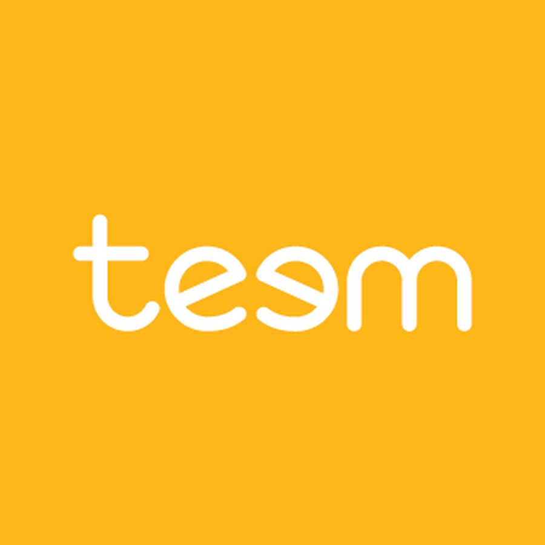

CONTACT
DustinMarks07@gmail.com
(801) 557-6342
Draper, UT
EDUCATION
Bachelor of Science
Computer Science
University of Utah
Class 2010
Salt Lake City, UT
SKILLS
Ethereum (Solidity)
Hardhat, Truffle, Openzeppelin
Typescript (NodeJS, ReactJS)
C#, C++, ASP
MSSQL, PostgreSQL

BLOCKCHAIN / WEB ARCHITECT
GiddyAugust 2021 - August 2023
- Designed and implemented DeFi smart contracts in a streamlined single-step approach, managing assets exceeding $30 million.
- Led the architecture of auto-compounding yield aggregators, enabling user deposits/withdrawals across key DeFi platforms: Gamma, AAVE, Uniswap, Quickswap, Sushi, Curve, and Balancer. CodeLink
- Developed the Giddy token streaming DApp, https://coinlaunch.giddy.co/. Successfully streamed over a billion tokens without security incidents, propelling the token's value to $0.30 within the first few weeks post-launch. At its peak, managed and safeguarded over $50 million in customer crypto assets.
- Ensured the robustness and safety of deployed contracts by proactively mitigating potential vulnerabilities. Collaboratively cross-audited contracts with other leading crypto companies, further reinforcing contract security and trustworthiness.
- Possess a comprehensive understanding of crypto transactions, proficient in signing transactions using Web3 and Ethers, with a keen focus on gas optimization and transaction efficiency.
- Expertise in implementing upgradable contracts, enforcing security through timelocks, utilizing Gnosis safes, and leveraging tools like Defender for enhanced contract management and protection.

MOBILE APPS TEAM LEAD
DriverTech LLCAugust 2017 - August 2021
- Leading DriverTech’s mobile team in developing a suite of mobile apps and custom android devices for long haul trucking.
- Our team created an IoT style android tablet that is replacing existing in cab hardware on over 60,000 long haul trucks. This device provides a variety of necessary services for fleet management such as hours of service, document scanning, messaging and workflow. Created API using GRPC for third party vendors such as mapping and customer applications for the tablet.
- Created DTMobile which is a companion application used on the truck driver’s smart phone or tablet. This allows the driver to be away from the Truck and perform document scanning, messaging, and vehicle inspections. Built using Xamarin and is available on both apple app store and google play.
- Devoloped ASP/SignalR web services backend for communication with all DriverTech mobile applications. Utilizing MSSQL databases and Firebase for driver messaging and notifications.

SENIOR SOFTWARE ENGINEER
Teem TechnologiesOctober 2016 - August 2017
- Created both react native and C# microsoft outlook plugins. Plugins would manage meeting resources and allow you to search, book, and see availability within a corporation.
- Heavy focus on UI design, long running app lifecycles, and interacting with web services. Collaborated with product and design to ensure consistent delivery of high quality product.
SENIOR EMBEDDED SOFTWARE ENGINEER
DriverTech LLCJune 2006 - October 2016
- Senior member of the embedded development team responsible for a full vehicle fleet management solution. Software written in visual C++ and C# provides mangers and drivers with live GPS updates, mapping, engine data, and hours of service.
- Interfacing with hardware protocols, GPS, TCP, UDP, CAN, 1939, 1708, Serial, Modems (GSM, CDMA, HSDPA), WLAN, Orbcomm Satellites.
- Designing and maintaining large relational SQL databases. Extensive experience in web services, stored procedures, clustered indexes, triggers, foreign keys, identities, and joins.
- Responsible for designing and servicing all Production/RMA software written in dot net. This includes all hardware test software, product and repairs tracking, and several ASP web sites and web services to manage the process.
- Collaborate closely with other team members to plan, design and develop robust solutions using Jira and Agile methodology.